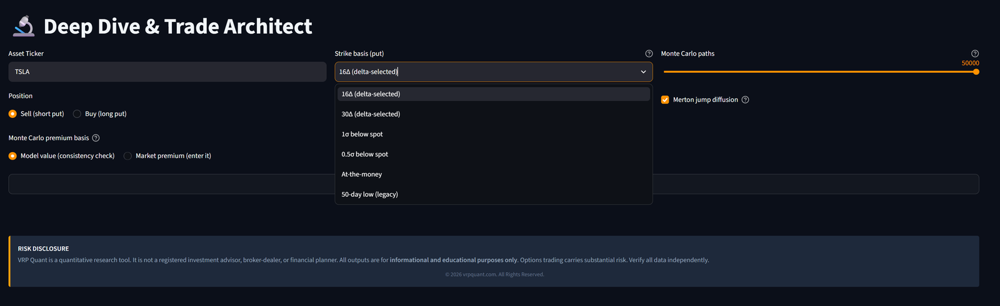
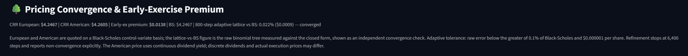
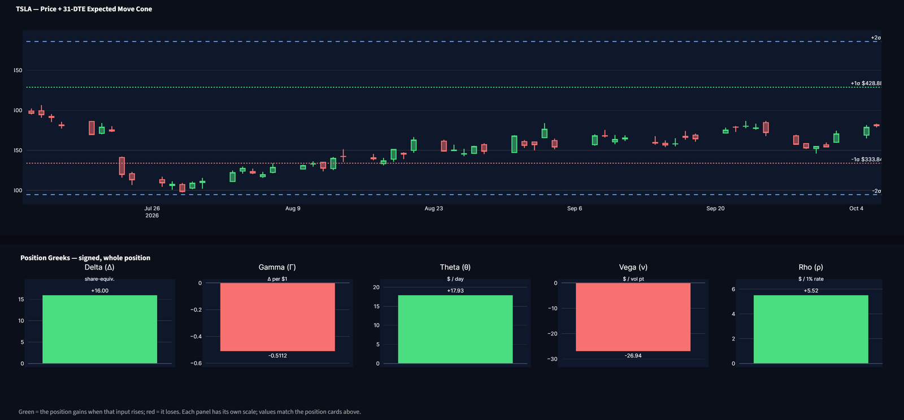
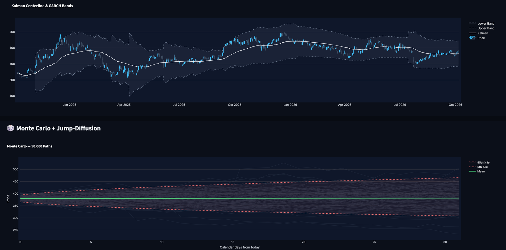
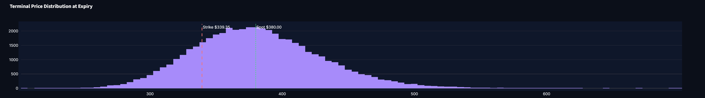

Verified math.
Not asserted.
Every build of the VRP Quant terminal runs a deterministic proof suite in continuous integration before it can deploy. The report it produces is published on this site, stamped with the engine fingerprint and commit you can read in the terminal sidebar. If the mathematics breaks, the build goes red and it does not ship.
A variance risk premium research terminal that shows its working.
Three modules. The Scanner ranks a universe on volatility-regime and premium-richness criteria. Deep Dive takes one name and prices a position three ways from the same inputs, then shows you how far the three disagree. The Scan Journal logs every name the Scanner scores and, once each horizon has passed, measures the model against what followed.
What it does not do is hand you a trade and hide the derivation. Every strike is traceable to a stated basis, every volatility figure to a stated estimator, every price to a stated model, and every data point to the source that actually served it.
Every ticker runs the same pipeline. No shortcuts, no exceptions.
Six-source data waterfall
Alpha Vantage, Google Finance, Polygon, yfinance, FRED and NewsAPI, each with per-request health reporting. Source indicators reflect the outcome of the actual request, never merely that a key is configured. A throttled reply that arrives dressed as a success is caught and marked as a fallthrough. Every price carries the time it was valid and is labelled live, delayed, last close, stale or unknown against the market session — "live" only when the timestamp supports it — and every price history states its units and whether it is split- or dividend-adjusted.
Gap-aware volatility
Yang-Zhang realised volatility over a fixed window, so overnight gaps are measured instead of ignored. Close-to-close estimators treat a gap as though it never happened, which is exactly backwards for anyone short premium.
Three pricing methods, one set of inputs
Black-Scholes closed form, an 800-step Cox-Ross-Rubinstein lattice covering European and American exercise, and Monte Carlo across five to fifty thousand paths with optional Merton jump diffusion. The lattice reports its own error against the closed-form price on screen. All three share the same volatility, rate and strike, so their agreement checks the arithmetic, not the inputs — and with jumps switched on the simulation is a different model by design, so its numbers are not expected to match the closed form.
Implied volatility, solved not borrowed
At-the-money implied volatility is solved from the live chain's own bid and ask — the call side and the put side independently, at the expiry's actual days to expiry and the current Treasury rate — rather than read out of a data vendor's implied-volatility field. The two sides are compared at the same strike and expiry; listed options are American and many underlyings pay dividends, so some gap is normal, but a gap too large for early exercise and dividends to explain marks a stale or one-sided quote and the chain is rejected. A last trade is used only if it is recent, and then with its real uncertainty, never as a price known to the cent. Where the quoted market is too wide to identify a volatility at all, it says so rather than reporting a number. Every Greek, every tree price and every simulation below it inherits that figure — and that contract's expiry, and one stated dividend assumption — which is why their provenance is printed beside them.
Strike selection you control
Delta-selected strikes solve numerically for the strike carrying that delta. Sigma bands are drift-corrected lognormal quantiles. They are related and not equal, and the terminal keeps them as separate choices rather than quietly conflating them.
Live discount rate
Discounting uses the current three-month Treasury yield pulled from FRED and dated on screen, not a hardcoded constant left over from whenever the file was written. If FRED is unreachable, the 13-week T-bill index stands in and the screen says so.
Build traceability
The terminal's sidebar shows its version, the engine file's SHA-256 fingerprint and the commit it was deployed from; the verification report prints the same fingerprint and the exact package versions it ran against. Where they match, the software in front of you is the software that was proven. The terminal deploys only from a branch that advances after the verification suite and a smoke test of every screen pass.
Scan Journal: the model, measured
Every scanned name is logged with its readings and one standard reference position, a short 16-delta put priced at the logged implied volatility with the name's dividend yield. When its horizon passes, the journal records whether implied volatility exceeded the volatility that followed — measured with the same Yang-Zhang estimator as the entry reading — and whether the reference put finished above breakeven. Names scanned in the same month ride the same market, so every 95% interval is sized on an effective sample, not the row count. It is a calibration instrument for the model. It is not a performance record, and no journal result appears on this page.
Access control
Passwords are stored only as bcrypt hashes. Six failed logins in fifteen minutes lock an account for fifteen minutes, and the lock survives a restart. Existing and non-existent usernames are handled identically, so the login page reveals nothing about who has an account. No database table is reachable with the public key, and the verification suite audits every setup script and scans the repository for committed credentials on every build.
Unedited captures from the running terminal.
These are screenshots of the deployed application, not illustrations of it — cropped to the working area, otherwise unedited; where a plate covers two screens of the same session, the two are stacked with a gap between them. One TSLA session, one scan, the same day. The charts drawn on this page are generated from that session's inputs, so every number here agrees with the screenshots beside it.
![Market scanner on the Mag 7 plus Bitcoin universe. The header states 8 of 8 scored names shown, ranked by alpha score, none excluded, IV basis 7 solved at-the-money and 1 VIX proxy. Eight rows — MSFT, AAPL, BTC-USD, META, NVDA, AMZN, GOOGL, TSLA — with last close and date, alpha score, trend with its t-statistic, VRP and VRP over noise, implied and 21-day realised volatility, next earnings, 25-delta put skew and options market. A second strip shows the same rows scrolled right: 60-day realised volatility, 30-day expected move, support, resistance, structure fit, legs, model premium, underlying liquidity and volatility-target estimate. MSFT reads short put vertical, TSLA iron condor, six names no fit with the reason stated.](plate-scanner.png)

![Deep Dive for TSLA. Provenance line: 380.00 from the Schwab quote, sigma 43.0 percent solved from the at-the-money options on the Schwab chain, risk-free rate 4.220 percent from FRED three-month Treasury, dividend yield confirmed zero, horizon 31 DTE, expiry 2026-11-06. Structure fit card: no structure fit, because an earnings report falls inside this expiry. Market variables: price 380.00, alpha score 43, trend neutral, 60-day volatility 42.7 percent, VRP edge +8.61 points, support 297.38, resistance 386.83, one-day VaR 17.11. A banner states the Oct 28 report falls before expiry, so the VRP reading overstates the ongoing premium. Below: expected move and delta-selected strikes both headed 31 DTE, expiry 2026-11-06; position Greeks for one short 16-delta put at 339.35 — per share delta +0.16, gamma −0.00511, theta +0.1793 dollars a day, vega −0.2694 per volatility point; for the position, premium received 424.67 and delta +16 share-equivalents.](plate-deepdive.png)




Proof that runs on every commit, published in full.
No market data, no API keys, no network. Each check is a closed-form identity or a convergence property — true or false independently of any market view. The suite exits non-zero on failure, so a passing run cannot be a silent one.
| Property tested | Result |
|---|---|
| Put-call parity across dividend yields, price and delta | Holds |
| Dividend yield applied exactly once | Exact |
| CRR European convergence to Black-Scholes | 640/640 cases |
| American ≥ European, early exercise non-negative | 60/60 pairs |
| American price against a 4,000-step reference | 0.135% worst |
| One-sigma bands vs true lognormal quantile | Exact |
| One-sigma breach probability vs theory | 15.87 / 15.86 |
| Volatility estimator independent of input length | Stable |
| Greeks sign and range | Holds |
| Monte Carlo memory bounded at maximum paths | < 500 MB @ 50k |
| No look-ahead in the walk-forward backtest | Prefix-stable |
| GARCH forecasts unchanged when future data changes | Zero drift |
| Position Greeks signed by side and size | Holds |
| Feature limits enforced at execution | Holds |
| Monte Carlo agrees with the matching model price | Within 4 SE |
| One dividend input through every pricer | Holds |
| Quote freshness and volume units | Holds |
| Every screen runs end to end before deploy | Smoke test |
| Incomplete price bars removed before any model | Holds |
| POP computed from the seller's P&L, net of premium | Holds |
| Implied volatility round-trips to the pricing volatility | 1.9e-05 worst |
| Implied volatility solver declines what it cannot identify | Holds |
| Realised volatility matches the textbook Yang-Zhang estimator | Holds |
| Market-data adapter: IV solved, never copied; one price snapshot | Holds |
| No account or order endpoint reachable from the code | Holds |
| Journal intervals sized on the effective sample, not the row count | 19 of 400 correlated |
| Journal reference put carries the dividend yield | Exact |
| Journal forward volatility uses the entry estimator (Yang-Zhang) | Holds |
| Database closed to the public key; login lock survives a restart | Holds |
| No credential committed to the repository | Holds |
| Test calendars valid on every weekday | 7 / 7 |
These establish that the arithmetic is correct. They say nothing about whether any given trade is profitable, and are not offered as though they did.
Research and education purposes only.
VRP Quant is a quantitative research and education tool for studying the variance risk premium and how short-premium options structures are priced. There are no plans, prices or subscriptions on this site. Nothing the terminal produces is a recommendation to buy or sell any security, and nothing on this page describes a trading result.
Ask how it works.
Questions about methodology or data sources: VRP Quant's social channels — X (@VRPQuant), LinkedIn and Facebook (VRP Quant).
VRP Quant does not answer questions about whether to place a specific trade, on any channel. It is a research tool, not an advisor, and it is not registered to give individual investment advice.
Straight answers, including the ones that don't sell harder.
Does the verification report mean the signals make money?
No, and it is not offered as though it does. It proves the pricing mathematics is correct. Pricing an option right is a necessary condition for the tool to be worth anything and not a sufficient one. Anyone conflating the two is selling you something.
Is there a backtest with a return figure?
The terminal runs a walk-forward, out-of-sample backtest of its underlying band signal — it trades the stock, not an options position — and shows it inside the product with a hypothetical-performance disclaimer attached. Those numbers are not reproduced on this page, because a simulated result presented as marketing is a performance claim and this is a research tool, not a track record.
Where does the data come from?
Six sources in a defined waterfall. Free-tier limits are real and the terminal tells you when it hits one rather than silently substituting stale data. The sidebar reports which source served each request, and every price on the analysis page says how fresh it is.
Can I verify the report myself?
You can check that it applies to the software you are using. The report is generated by the test suite and run by GitHub Actions against the commit named in its header, and it prints the engine file's SHA-256 fingerprint and the exact package versions it ran against. The terminal sidebar shows the same version, fingerprint and commit. Where they agree, the software in front of you is the software that was proven. The terminal's source repository is private, so the suite itself cannot be re-run from outside; the report is published in full so the result can be read rather than taken on trust.
What is the Scan Journal, and where are its results?
It logs each scanned name with a standard reference position and later checks the model against what followed: did implied volatility exceed realised, and did the reference put finish above breakeven. Its results stay inside the terminal, stated with their effective sample size and interval. They are measurements of the model, not trading results, and are deliberately not reproduced here.
Does it place trades?
No. There is no order routing and no execution of any kind — the code cannot reach an account or order endpoint, and the verification suite checks that on every build. It is a research terminal. You take your own decisions to your own broker.